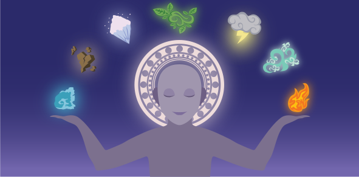

How to be a Magician
Step 1: Know Your Elements
Arcadia, the world of magic, is not that different from the world of mortals. Just like the mortal realm, Arcadia is made of the basic elements of nature which magic can be manipulated through. There are however 3 categories that seperate the 8 elements of magic that can be controlled and given form through enough practice.
Inner Elements
The Inner elements are the most basic magic forms that all novice magicians must master and familiarize themselves with if they are going to learn any of the outer element spells. The Inner Elements are Fire, Water, Earth, and Air. The Inner elements are the 4 resources that made up the world of Arcadia and are easily accessible.
Fire is the basic element of energy, and holds a lot of potential for destruction. This element is the first to be tutored to Novice Magicians so they can learn to concentrate the flow and volume of their mana.
Earth is the second element to be tutored, also an elective element. Mineral control is basically controlling the shape of minerals that are already there instead of condensing or gathering its form like the other elements. However, mineral control is very popular with merchants as they can use Earth spells to conjure gold and other rare minerals. It's a popular element for the wealthy and the greedy.
The next element, which many struggle with to learn, is air. Air spells is often used by broom-riding magicians for it can assist in flying. However, air is the element many magicians get stuck on for its an element that can't be seen, but rather felt. With Air manipulation you can control the currents around you as well as sound. This element can be used for flight, gas manipulation, making storms, and even music. Air spells are popular with musicians.
The last element, the most capable and complicated, is water. Water spells are the last element to be tutored to novice magicians for they must learn the 3 other inner elements to learn the final inner element, the element of life. Water can take many forms such as solid, gas, liquid, etc. Once a novice magician has learned how to control mana flow and volume, manipulation over water should be a walk in the park. Water spells can even be used for healing. Water spells, however, are a great danger for they can be used to stir up hurricanes, tsunamis, and even shift the blood flow within a person. As seen as the basic inner element of life, it can also bring death.
Outer Elements
The outer elements are the secondary elements that came after the inner elements while the realm of Arcadia was forged. The outer elements are tutored to elite magicians for they can not be learned unless the magician has mastered the inner elements. The outer elements are Ice, Lightning, and Fungi.
Lightning spells are another form of energy, and is easy to learn if a magician is an expert with fire spells. Lightning magic is the control of electronic waves and condensing them. Lightning magic, such as fire, can be very dangerous if not concentrated correctly. Lightning spells consume much more mana than any other spells type for it requires double the volume of mana than regular fire spells. However, its not only rarely used due to its mana consumption, but the threat it imposes to the user. Lightning magic needs a steady mana flow to be casted, but if that concentration or flow is disrupted, it can end up electricuting the magician and even kill them.
The next outer element is ice, or rather temperature manipulation. It can be used by almost any magician if they have learned the basics of fire and water spells. Ice spells are used to decrease or increase temperature. With fire magic you learn to increase temperature, but ice magic you just reverse the flow of mana to decrease its temperature. It's best manipulated with water spells and one of the easiest outer elements to tutor.
The last outer elements is Fungi. Fungi is the manipulation over plants. Able to make them grow or shrink, change form, and even become sentient such as a venus flytrap beast. Fungi magic can be learned if a magician has basic manipulation over Earth and Water magic. Its popular among most mortals for its usefulness in raising crops for farmers, or crafting herbs for potions that are used by doctors or other alchemists.
Raw Element
The final and most mysterious element is "Energy". Pure, raw energy. It's an element that nobody has yet been able to manipulate, but it's known for a fact that it dwells within everyone and everything. Some call it "soul energy", some call it "stardust energy" for everything in the universe is made of stardust, and "aura energy" as signature of life and presence. It's an element that's shrouded in mystery despite its existence being proven to dwell within everything. However, if such an element were to be mastered, it could bring great miracles or tragedies. This element will barely be discussed anywhere.